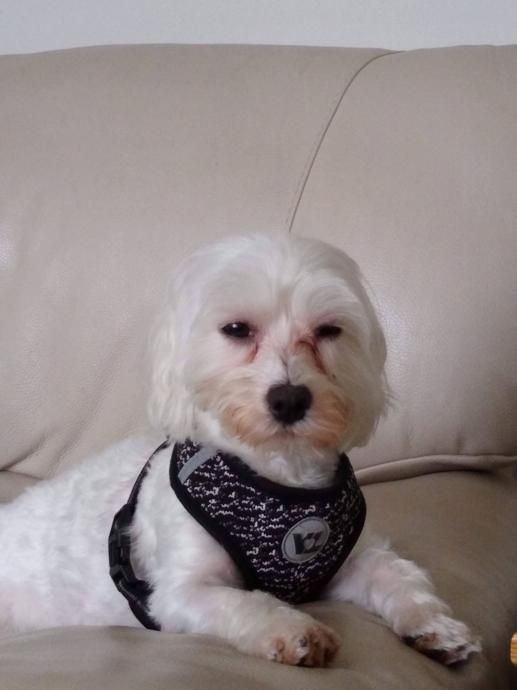
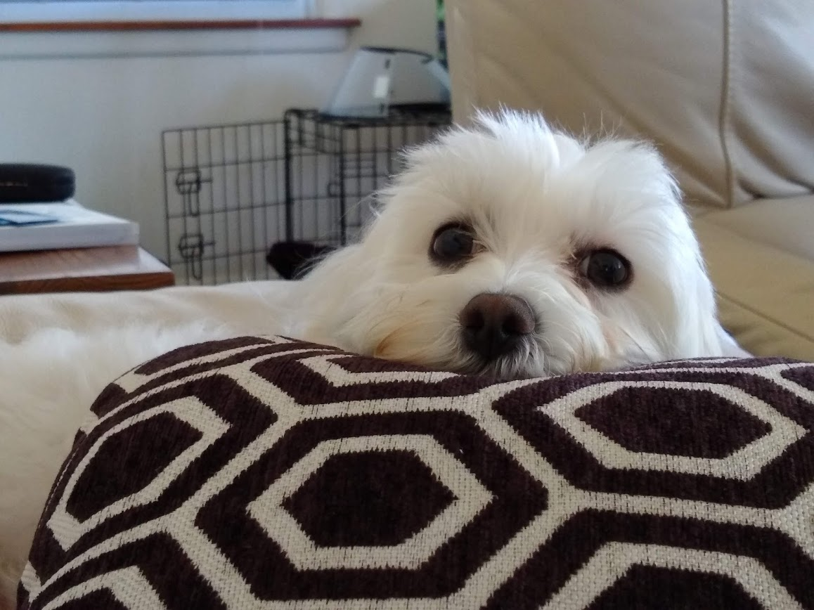

N0.3
Below are pictures of George. He's a maltese mutt we found in the shelter.
The other dogs didn't like him because he was barking like a maniac.
He's a little bit less of a maniac now that he has a home with us.

The top one is from the first week. The bottom was after a year.

Click here to move a step closer
Go back